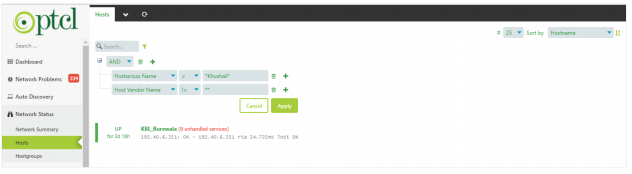

Welcome to Trace9 Monitoring - Query Builder’s documentation!¶
A. General Process¶
1). Query Builder on Network Status > Network Summary¶
Extracting site counts based on different parameters using query builder, steps are as follows:
ii. Click on the filter icon on the appeared window, a list of options will appear¶

iii. You can select parameters based on your required data from this list.¶
2). Query Builder on Network Status > Hosts¶
Extracting sites lists based on different parameters using query builder
i. Click on Network Status from the left-side menu and select Hosts from the menu list a view containing list of hosts will appear.¶

ii. Click on the filter icon on the appeared window, a list of options will appear.¶
iii. You can select parameters based on your required data from this list.¶

B. General Filter Parameters¶
1). Site/Host parameter-based filtering¶
i. Basic Site/Host Parameters¶
Host (Case insensitive): The name of host/site to be searched.
Host Address: The IP Address of host/site to be searched.
Host Check Source: The zone of host/site to be searched.
For zone-01, add “tfe02-v01-isat01” or “tfe3-v01-isat01”.
For zone-02, add “tfe02-v03-isat03” or “tfe1-v01-isat01”.
For zone-03, add “tfe02-v02-isat02” or “tfe3-v02-isat02”.
Host Name: The name of host/site to be searched.
Host State: The state of host/site to be searched.
For UP, add 0.
For DOWN, add 1.
ii. Site/Host SNMP Parameters¶
For SNMP parameter-based filtering use following parameters:
Host Authtype: The authentication type for SNMPv3 added in host/site. Can be:
MD5
SHA
Host Authpass: The password of authentication type for SNMPv3 added in host/site
Host Privtype: The privacy/security type for SNMPv3 added in host/site. Can be:
AES
DES
Host Privpass: The password of privacy/security type for SNMPv3 added in host/site.
authPriv
noAuthnoPriv
AuthnoPriv
Host Password: The password for SNMPv3 added in host/site.
Host SNMP Version: The SNMP version added in host/site. Can be:
SNMPv1
SNMPv2
SNMPv3
Host SNMP Community: The community string for SNMPv2 added in host/site.
Host Username: The username for SNMPv3 added in host/site.
iii. Site/Host Custom Parameters¶
For filtering on basis of custom properties use following parameters:
Host Apn: The APN added in host/site.
Host Bandwidth: The bandwidth added in host/site.
Host Branch Code: The branch code added in host/site.
Host Branch Secondary Ip: The branch secondary IP added in host/site.
Host Branch Primary Ip: The branch primary IP added in host/site.
Host Exchange Secondary Ip: The exchange secondary IP added in host/site.
Host Exchange Primary Ip: The exchange primary IP added in host/site.
Host City: The city added in host/site.
Host Commissioning Date: The commissioning date added in host/site.
Host Device Model: The device model added in host/site.
Host Contact Info: The contact Info added in host/site.
Host Domain Name: The domain name added in host/site.
Host Dsl No: The DSL number added in host/site.
Host Geolocation: The geolocation added in host/site.
Host Lan IP: The LAN IP added in host/site.
Host Link Redundancy: The link redundancy added in host/site.
Host Local Exchange Name: The local exchange added in host/site.
Host Location: The location added in host/site.
Host Loopback Ip: The loopback IP added in host/site.
Host Radar: The radar added in host/site (only for radar sites).
Host Region: The region added in host/site.
Host Ptcl Region: The PTCL region added in host/site.
Host SLA: The SLA added in host/site.
Host Service Type: The service type added in host/site.
Host Serial: The serial added in host/site.
Host Sim Mdn: The MDN added in host/site.
Host Sim Ccid: The CCID added in host/site.
Host Site: The site added in host/site.
Host System Name: The system name added in host/site.
Host System Description: The system description added in host/site.
Host Termination Date: The termination date added in host/site.
Host Vendor Name: The vendor name added in host/site. Can be Huawei, cisco, Fortinet etc.
Host Wan Ip: The WAN IP added in host/site.
iv. Site/Host POC Parameters¶
For POC based filtering use following parameters
Host Customer Poc Email: The customer POC email added in host/site.
Host Customer Poc Name: The customer POC name added in host/site.
Host Customer Poc Phone: The customer POC phone added in host/site.
Host Onsite Poc Name: The onsite POC name added in host/site.
Host Onsite Poc Phone: The onsite POC phone added in host/site.
Host Ptcl Poc Email: The PTCL POC email added in host/site.
Host Ptcl Poc Name: The PTCL POC name added in host/site.
Host Ptcl Poc Phone: The PTCL POC phone added in host/site.
Host Vendor Poc Email: The vendor POC email added in host/site.
Host Vendor Poc Name: The vendor POC name added in host/site.
Host Vendor Poc Phone: The vendor POC phone added in host/site.
v. Site/Host Customer Parameters¶
For Customer based filtering use following parameters
Host Host Customer: The name of the customer added in customer field of host/site.
Hostgroup (Case-sensitive): The name of the Hostgroup field added in customer field of host/site.
Hostgroup Alias (Case-sensitive): The name of the Hostgroup field added in customer field of host/site.
Hostgroup Name: The name of the customer added in Hostgroup field of host/site.
2). Service parameter-based filtering¶
i. Service Basic Parameter¶
Service (Case-sensitive): The service name added in host. Basic service names are as follows:
Availability
Discovery
ICMP-Interface*
SNMP-Interface*
Status-CPU
Status-Memory
Status-Jitter
Status Temperature
* is used for wild card, in above case it can be 1,2 or anything
Service Description: The description added in service.
Service Display Name (Case Sensitive): The service name added in host. Basic service names are as follows:
Availability
Discovery
ICMP-Interface*
SNMP-Interface*
Status-CPU
Status-Memory
Status-Jitter
Status Temperature
* is used for wild card, in above case it can be 1,2 or anything.
ii. Interface Service Specific Parameters¶
Service Crm Service Id: The CRM service ID added in interface service.
Service Dsl No: The DSL number added in interface service. (Only for DSL sites)
Service Exchange Name: The exchange name added in interface service.
Service Interface Type: The interface type added in interface service. Can be:
Primary
Secondary
Tertiary
Quaternary (Fourth)
Quinary (Fifth)
Senary(Sixth)
Management
Service Interface Ip: The interface IP address added in interface service. (Only for ICMP services)
Service Media Type: The media type added in interface service. Can be:
DRS
DSL
Fiber
LTE
VSAT
Service Media Vendor: The 3rd party media vendor added in interface service.
Service Pe Interface: The PE Interface added in interface service.
Service Pe Router Address: The PE Router Address added in interface service.
Service Pe Router Name: The PE Router Name added in interface service.
Service Services Type: The service type added in interface service. Can be:
MPLS
PIB
Service SNMP Interface: The IP address or name of interface added in interface service. (Only available for SNMP service)
Service Transmission Port ID: The transmission port ID added in interface service.
Service Use Ip Address: The Boolean check added in interface service for determining if it is using interface name or interface IP for data fetching. Can be:
true
false
Service Vlan: The VLAN added in interface service.
C. Specific Filter Parameters – Network Summary¶
Some filter parameters which are specific to the Network Summary interface
Host: The name of host/site to be searched.
Host Alias: The name of host/site to be searched.
Service: The service name added in host. Basic service names are as follows:
Availability
Discovery
ICMP-Interface*
SNMP-Interface*
Status-CPU
Status-Memory
Status-Jitter
Status Temperature
* is used for wild card, in above case it can be 1,2 or anything.
D. Basic Operations¶
1) AND, OR, NOT¶
i. AND Operator¶
If AND operator is added in between two parameters then if both statements are true, result of query will be displayed.
ii. OR Operator¶
If OR operator is added in between two parameters if any one statement is true, then result of query will be displayed.
iii. NOT Operator¶
If NOT operator is added in between two parameters one should be true and other should be false.
2). = , !=, >, <, >=, <=¶
i. = Operator¶
This operator is added if parameter value added in host/service is equal or like provided value.
ii. != Operator¶
This operator is added if parameter value added in host/service is not equal or not like provided value.
iii. > Operator¶
This operator is added if parameter value added in host/service is greater than provided value. (Mostly use in case of numeric data)
iv. < Operator¶
This operator is added if parameter value added in host/service is less than provided value.(Mostly use in case of numeric data)
v. <= Operator¶
This operator is added if parameter value added in host/service is greater than or equal to provided value. (Mostly use in case of numeric data)
vi. >= Operator¶
This operator is added if parameter value added in host/service is greater than provided value. (Mostly use in case of numeric data)
E. Wild Card Search¶
1). *¶
i. If we add Khushali* in the value panel, it will return all the records in which provided parameter value starts with Khushali keyword.
ii. If we add Khushali* in the value panel, it will return all the records in which provided parameter value has Khushali keyword in it.
iii. If we add Khushali* in the value panel, it will return all the records in which provided parameter value ends with Khushali keyword.
2). **¶
Adding this will return all the records in which provided parameter value is not null.
F. Sort By¶
Sort By dropdown provides sorting based on available parameters. Available parameters are as follows:
i. Hostname
ii. Severity
iii. Current State
iv. Address
v. Last Check
vi. Last State Change
G. Example Use Cases¶
1) Count of hosts based on region¶
Select “Host Region” from the filter parameters in Network Summary window, add “=” in operator panel, you can specify different values for different regions in the value panel.
Add “North” in the value panel for filtering north region sites/hosts.

Add “South” in the value panel for filtering south region sites/hosts.

Add “Central” in the value panel for filtering central region sites/hosts.
2) List of sites based on media type¶
Select “Service Media Type” from the filter parameters in Hosts window and add “=” in operator panel, you can specify different values for different media types in the value panel:
Add “Fiber” in the value panel for filtering sites/hosts where link media type is Fiber .
Add “DRS” in the value panel for filtering sites/hosts where link media type is DRS.

Add “DSL” in the value panel for filtering sites/hosts where link media type is DSL.

Add “LTE” in the value panel for filtering sites/hosts where link media type is LTE.

Add “VSAT” in the value panel for filtering sites/hosts where link media type is VSAT .
Click on Apply button to apply the selected filter.
3). Sites Not discovered via SNMP¶
Select “Host Vendor Name” from the Hosts filter parameters and add “ ** ” , after selecting “!=” in the operator panel.
Click on Apply button to apply the selected filter.
If you want to filter sites of some specific customer, follow below steps:
Click + button on the right side of the added parameter. This will add another option for you to select.
Select “Hostgroup Name” from the filter parameters in Hosts window and add “*Khushali*” or “Khushali-Bank” for filtering KBL sites which are not discovered over SNMP in the value panel.
You can also add some other customer name for filtering sites of that customer.
** used for wild card search, adding this will return all the records in which provided parameter value is not null.
* used for wild card search
4). Hosts with media type missing in ICMP service¶
Select “Service(Case Sensitive)” from the filter parameters in Hosts window and add “*ICMP*” or “ICMP-Interface*” in the value panel.
Click + button on the right side of the added parameter. This will add another option for you to select.
Select “Service Media Type” from the filter parameters and add “**” , after selecting “!=” in the operator panel.
Click on Apply button to apply the selected filter.
** used for wild card search, adding this will return all the records in which provided parameter value is not null.
* used for wild card search
5). Hosts with PTCL region missing¶
Select “Host PTCL Region” from the filter parameters in Hosts window and add “**” in the value panel.
Click on Apply button to apply the selected filter.

** used for wild card search, adding this will return all the records in which provided parameter value is not null.
6). List of Internet Sites added in NMS¶
As shared by the team, internet sites belong to following subnets:
221.*
182.*
202.*
58.*
59.*
Select “Host Address” from the filter parameters in Hosts window.
Add “221.*” in the value panel if you want to filter internet sites with subnet 221.*
Add “182.*” in the value panel if you want to filter internet sites with subnet 182.*
Add “202.*” in the value panel if you want to filter internet sites with subnet 202.*

Add “58.*” in the value panel if you want to filter internet sites with subnet 58.*

Add “59.*” in the value panel if you want to filter internet sites with subnet 59.*
Click on Apply button to apply the selected filter.
* used for wild card search